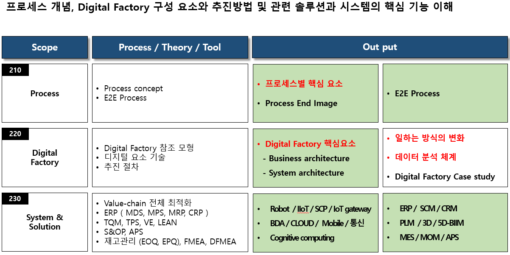
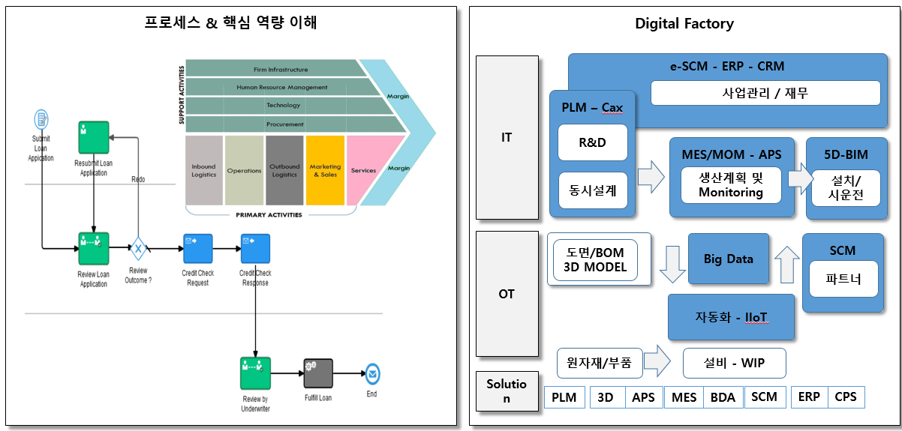
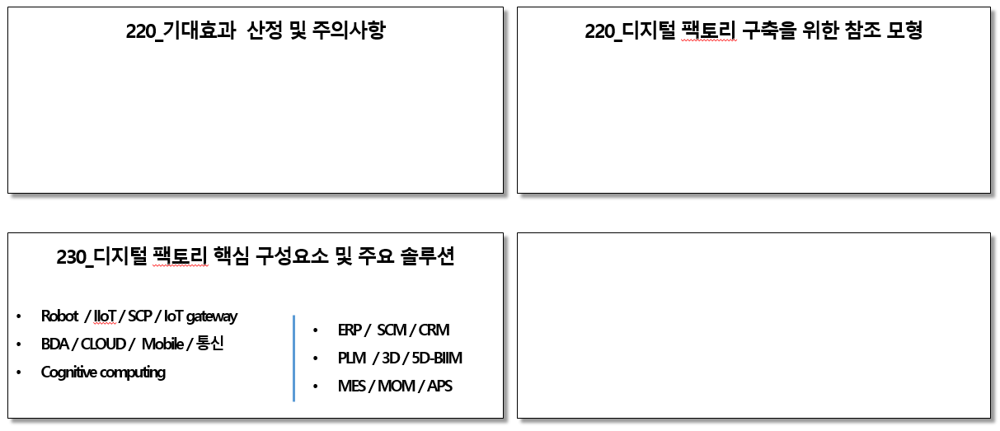

Knowledge scope - Operation Excellence

가장 중요한 것은 운영 효율화를 통하여 산출되는 결과물의 고객가치와 기업의 가치이며, 그 가치의 의미를 VRIO 관점에서 점검하고
전략과 연계성이 중요하다.
주요 output - Operation Excellence

source: https://keydifferences.com/difference-between-supply-chain-and-value-chain.html
https://docs.oracle.com/en/cloud/paas/process-cloud/user/business-processes.html#GUID-2080743F-61AA-4D41-B5BA-B80E2F8F903A
Digital Factory는 일하는 방식의 변화 중 하나의 방식이며, 이 자체가 목적이 되어선 안된다.
주요 Contents

일하는 방식을 효율적으로..
필요한 물건이 정해졌다면 그 다음의 일은 아주 손쉬어야 한다. 적합한 업체를 찾거나, 적절한 가격인지 판단하고
예산의 여부와 내부 승인 절차는 인터넷에서 생활용품 구입하듯이 아무런 불편이 없고 직관적이어야 한다.
제품 설계 시에는 필요한 기술과 유사한 제품에 관한 최신 정보를 찾아내어 손쉽게 활용하고, 외부의 관련 전문가를 찾아서
관련 내용을 공유하고 협업을 친구와 카톡하듯이 하면서도 회사 보안을 유지할 수 있는 업무 프로세스가 필요하다.
새로운 사업이나 제품으로 인하여 내부의 프로세스를 변경할 때 시스템의 구축이나 변경에 시간이 많이 소요되지 않고 레고 블록
쌓듯이 새로운 사업에 맞는 업무 절차가 정해지면, 시스템이 즉시 반응하는 유연한 시스템이 경쟁력이다.
AI, Machine Learning과 같이 새로운 좋은 기술이 나타나면 즉시 내부에 그것을 활용할 수 있는 직원들의 수용성을
위해 상시 직원들이 새로운 것에 대한 스스로 학습이 가능한 체계가 필요하다.